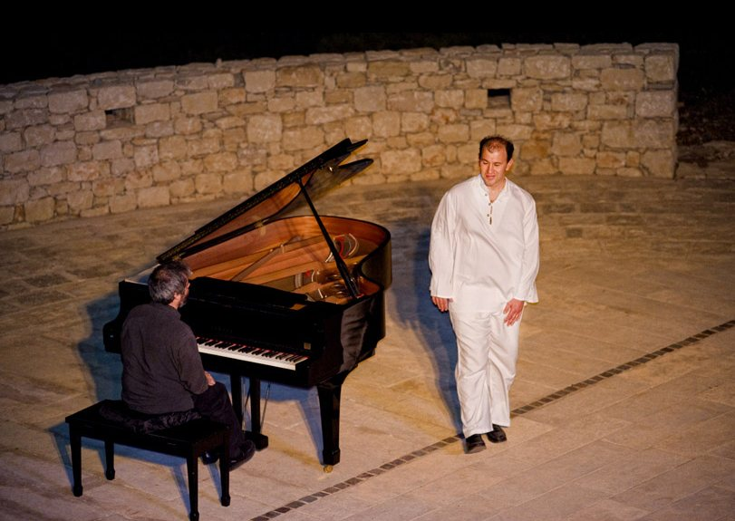
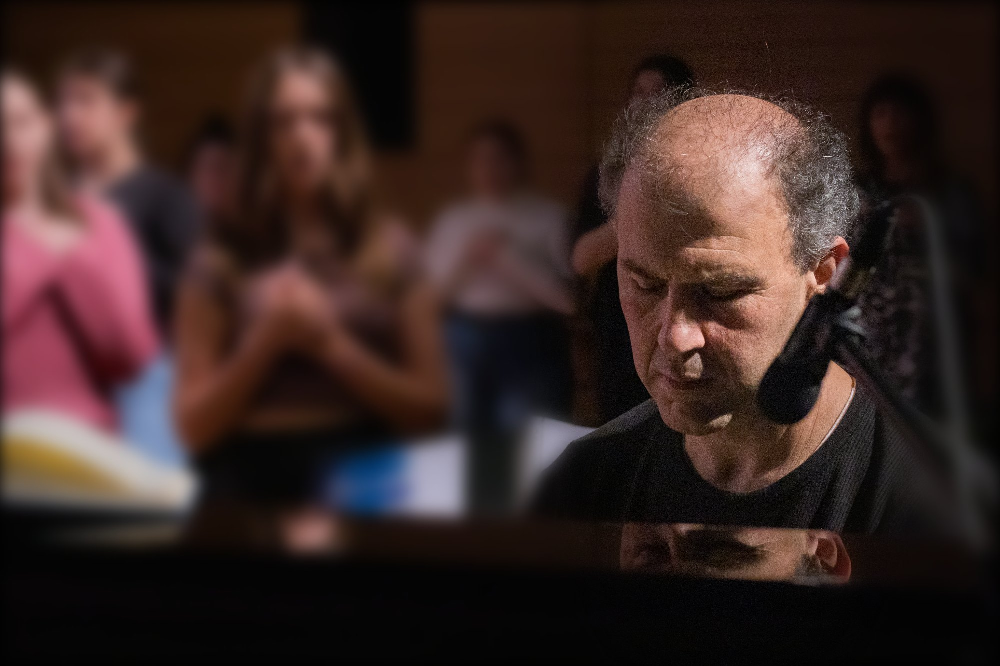
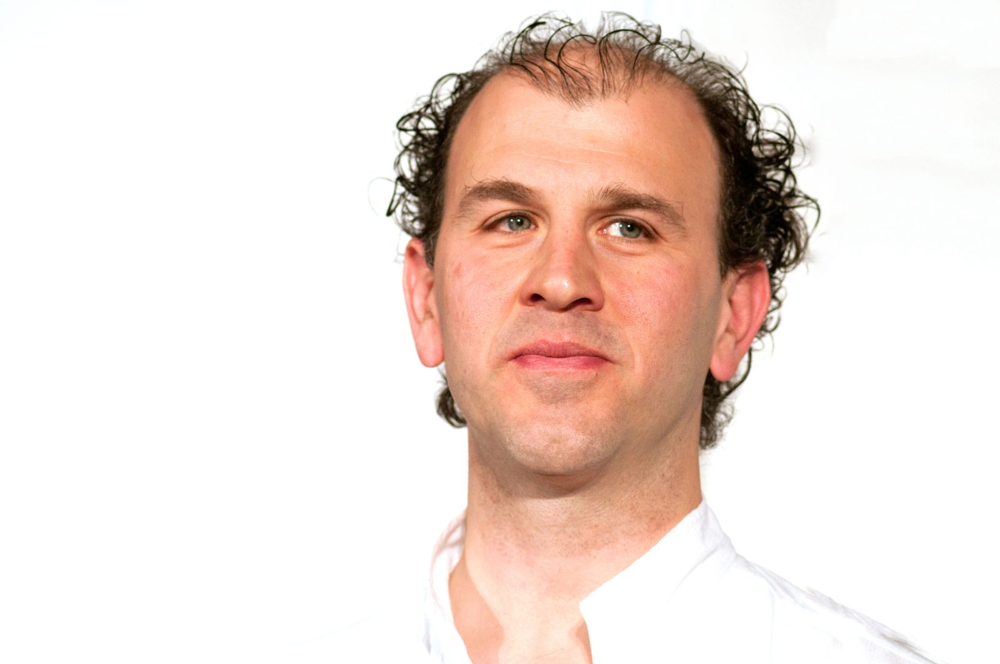
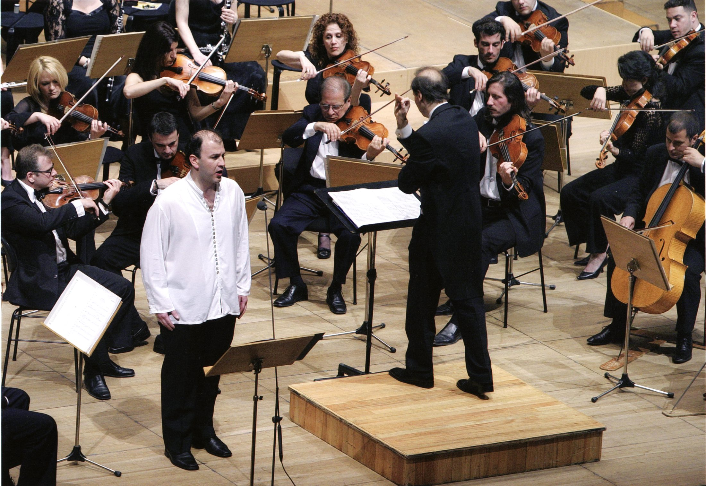
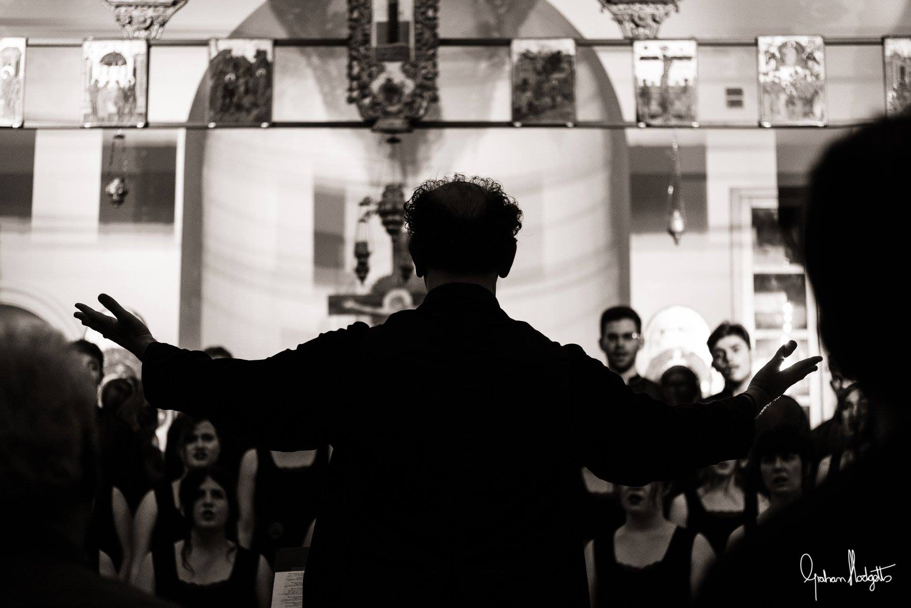

Η σύνδεση με την αληθινή φωνή μου, η έκφραση των συναισθημάτων μου και η εξέλιξή μου ως άνθρωπος μέσα από το τραγούδι
Κάθε άνθρωπος έχει μία μοναδική φωνή και την ιδανικότερη για το δικό του ψυχικό, συναισθηματικό κόσμο.
Η φωνή μας, εκτός από μεταφορά πληροφοριών, μπορεί να λειτουργήσει βαθιά στην επικοινωνία των ανθρώπων μέσα από την ομιλία και το τραγούδι, δονώντας τα συναισθήματά μας και δημιουργώντας μία βαθύτερη σύνδεση.
Συχνά η σύνδεσή μας με τη βαθύτερη φωνή μας, αποκαλύπτει τη βαθιά μας ποιότητα και τη μοναδικότητά μας.
Ιωάννης Ιδομενέως, τραγούδι · Αναστάσιος Στρίκος, πιάνο

Τρεις ενότητες, με τρία στάδια η καθεμία. Σε κάθε στάδιο, ξεκινάμε από τη συνειδητοποίηση, περνάμε στην εξέλιξη και παίρνουμε τα εργαλεία για να μπορούμε μόνοι μας, στην καθημερινότητά μας, να συνδεόμαστε βαθύτερα με ό,τι έχουμε ανάγκη για την εξέλιξή μας.


Γεννήθηκα το 1971 στο Ηράκλειο. Η μουσική ήταν παρούσα από νωρίς — τα πρώτα χρόνια σπουδών στην πόλη μου ήταν η απαρχή μιας διαδρομής που δεν έχει σταματήσει.
Από το 1990 ως το 1999 σπούδασα στην Αθήνα — αρμονία, αντίστιξη, ενοργάνωση, φούγκα, κλασικό τραγούδι και διεύθυνση χορωδίας. Κάθε πτυχίο ήταν ένα νέο άνοιγμα στον κόσμο του ήχου και της έκφρασης.
Το 1999 έφτασα στο Παρίσι, όπου έζησα και σπούδασα ως το 2007. Στα Conservatoires de Boulogne-Billancourt και de Pantin, και μέσα από σεμινάρια με δασκάλους όπως ο François Le Roux, η Ίρμα Κολάση, ο Gabriel Garrido και ο Helmuth Rilling, η φωνή μου βρήκε βάθος και άπλωσε σε νέες κατευθύνσεις. Εκεί απέκτησα και το δίπλωμα διδασκαλίας τραγουδιού.
Από το 1995 ως το 2021, ως σολίστας τραγούδησα στην Ελλάδα, Κύπρο, Γαλλία, Φινλανδία, Τσεχία, Αυστρία, Ισπανία και Γερμανία. Συνεργάστηκα με τον Νίκο Μαμαγκάκη σε αρκετές ηχογραφήσεις και με τον Μίκη Θεοδωράκη, έργα του οποίου παρουσίασα σε τέσσερα ρεσιτάλ στο Μέγαρο Μουσικής Αθηνών. Τραγούδησα στο Μέγαρο Μουσικής Θεσσαλονίκης, στο Ηρώδειο και στον καθεδρικό ναό του Αγίου Πέτρου στη Γενεύη. Για χρόνια ήμουν μέλος φωνητικών συνόλων στο Παρίσι — Accentus, Musicatreize, Arsys.
Από το 2012, η κατεύθυνσή μου άνοιξε προς τη διεύθυνση και τη διδασκαλία. Ήμουν καλλιτεχνικός διευθυντής χορωδιών στο Ηράκλειο και στις Αρχάνες, και ίδρυσα το Φωνητικό Σύνολο ΦΩΝΩΔΙΑ, το οποίο διευθύνω έως σήμερα.
Διδάσκω τη φωνητική τέχνη από το 2009. Αυτό που έχω να προσφέρω με τη μέθοδο αυτή είναι ό,τι έχω μάθει, ό,τι έχω βιώσει, ό,τι έχω ανακαλύψει — για τη φωνή, για τον άνθρωπο, για τη σύνδεσή μας με το Όλον.


Ο Ιωάννης Ιδομενέως με είδε. Και αυτό δεν είναι δεδομένο για όλους τους ανθρώπους — να τους δει κάποιος.
Έφτασα τα τριάντα για να διαπιστώσω ότι είμαι χαρούμενη. Γιατί βρήκα τον δρόμο που γράφει το όνομά μου.
Η φωνητική τέχνη έχει γίνει η καθημερινή μου ανάγκη, για να νιώθω πιο ολοκληρωμένος ως άνθρωπος. Δρόμος για το φως.
Γνώρισα τη βαθιά μου σύνδεση με τη μουσική. Με τη μουσική νιώθω πλήρης — τόσο πλήρης όσο όταν ενωνόμαστε με τη φύση.
Τα μαθήματα με βοήθησαν να αποδεχτώ τον εαυτό μου και να μου αρέσει όπως είναι.
Είναι δάσκαλος με αποστολή — να πιστέψει και να συμβάλει, ώστε να φωτιστεί το θαύμα που είναι ο καθένας μας.
Να βοηθήσω τους ανθρώπους να συνειδητοποιήσουν τη βαθύτερη ποιότητά τους· να συνδεθούν με την αληθινή τους φωνή και να εκφραστούν.
Να ζήσουν την υπέροχη αίσθηση της ερμηνείας και της βαθιάς συναισθηματικής σύνδεσης — με το τραγούδι, με τους ανθρώπους, με το Όλον.
Συμπληρώστε τη φόρμα και θα επικοινωνήσουμε άμεσα για να επιλέξουμε τη βέλτιστη διαδρομή.
Επιθυμώ να εγγραφώΗ φωνή μου είναι εκεί, με περιμένει.
Ας συνδεθώ με την αλήθεια μου, με τη μοναδικότητά μου.
Έτσι θα αγαπήσω περισσότερο τον εαυτό μου, τη φωνή μου, και θα λειτουργεί το τραγούδι μου θεραπευτικά — για μένα και σε όσους τραγουδώ.